论文精读 Swin Transformer
4.Swin Transformer
Swin transformer: Hierarchical vision transformer using shifted windows
论文链接：https://arxiv.org/pdf/2103.14030.pdf
官方代码库：microsoft/Swin-Transformer
论文解读视频：https://www.bilibili.com/video/BV13L4y1475U
0.Swim Transformer简介
Swin Transformer是 ICCV 21的最佳论文，它之所以能有这么大的影响力主要是因为在 ViT 之后，Swin Transformer通过在一系列视觉任务上的强大表现 ，进一步证明了Transformer是可以在视觉领域取得广泛应用的。
更新时间线：
- 2021年3月传到 arxiv上的
- 2021年4月份代码库放出
- 2021年5月12号又放出来了自监督版本的Swin Transformer—moby，从方法上和性能上其实和MoCo v3和DINO都差不多，只是换了个骨干网络
- 接下来过了一个月，Swin Transformer就被用到了视频领域，推出了Video-Swin-Transformer，在一系列数据集上都取得了非常好的效果；
- 7月初的时候，因为看到了有 MLP Mixer 这篇论文，把 Swin 的思想用到了 MLP 里，推出了 Swin MLP
- 8月初的时候，把 Swin Transformer 用到了半监督的目标检测里，然后取得了非常好的效果
- 10月份的时候获得了ICCV 的最佳论文奖
- 12月份受到了 BEiT 和 MAE 的推动，用 Swin Transformer 基于掩码自监督学习的方式做了一个叫 SimMIM 的论文
所以说在这大半年的时间里，原作者团队就以每个月一篇论文的速度，基本把视觉领域所有的任务都刷了个遍，而且 Swin Transformer 不光应用范围广，效果也非常的炸裂。
所以说，在 Swin Transformer 作者团队不懈的努力下，Swin Transformer 在大部分视觉领域很多数据集上都取得了最好的结果，这就导致 Swin Transformer 成了视觉领域一个绕不开的Basline，接下来再想在这些数据集上刷分或者说再想发这些领域的论文，多多少少都得提到 Swin Transformer 或者跟它比，所以说它的影响力是巨大的。
1.题目
Swin Transformer是一个用了移动窗口的层级式的Vision Transformer
- Swin：来自于 Shifted Windows ，S 和 win，Shifted Window（移动窗口）也是 Swin Transformer这篇论文的主要贡献
- 层级式 Hierarchical
其实 Swin Transformer就是想让 Vision Transformer像卷积神经网络一样，也能够分成几个 block，也能做层级式的特征提取，从而导致提出来的特征有多尺度的概念
作者团队来自 MSRA
- MSRA 经常被誉为是研究者的黄埔军校，从里面出来了一众大佬，而且产出了一系列非常有影响力的工作，比如说大家耳熟能详的、现在单篇引用已经超过10万的 ResNet，也是四位作者都在 MSRA 的时候完成的工作
2.摘要
这篇论文提出了一个新的 Vision Transformer 叫做 Swin Transformer，它可以被用来作为一个计算机视觉领域一个通用的骨干网络
- 之所以这么说，是因为ViT 在结论的部分指出，他们那篇论文只是做了分类任务，把下游任务比如说检测和分割留给以后的人去探索，所以说在 ViT 出来之后，大家虽然看到了Transformer在视觉领域的强大潜力，但是并不确定Transformer能不能把所有视觉的任务都做掉，所以 Swin Transformer这篇论文的研究动机就是想告诉大家用 Transformer没毛病，绝对能在方方面面上取代卷积神经网络，接下来大家都上 Transformer 就好了
但是直接把Transformer从 NLP 用到 Vision 是有一些挑战的，这个挑战主要来自于两个方面
- 一个就是尺度上的问题。因为比如说现在有一张街景的图片，里面有很多车和行人，里面的物体都大大小小，那这时候代表同样一个语义的词，比如说行人或者汽车就有非常不同的尺寸，这种现象在 NLP 中就没有
- 另外一个挑战是图像的 resolution太大了，如果要以像素点作为基本单位的话，序列的长度就变得高不可攀，所以说之前的工作要么就是用后续的特征图来当做Transformer的输入，要么就是把图片打成 patch 减少这个图片的 resolution，要么就是把图片画成一个一个的小窗口，然后在窗口里面去做自注意力，所有的这些方法都是为了减少序列长度
基于这两个挑战，本文的作者就提出了 hierarchical Transformer，它的特征是通过一种叫做移动窗口的方式学来的
- 移动窗口的好处：不仅带来了更大的效率，因为跟之前的工作一样，现在自注意力是在窗口内算的，所以这个序列的长度大大的降低了；同时通过 shifting 移动的这个操作，能够让相邻的两个窗口之间有了交互，所以上下层之间就可以有 cross-window connection，从而变相的达到了一种全局建模的能力
这种层级式的结构不仅非常灵活，可以提供各个尺度的特征信息，同时因为自注意力是在小窗口之内算的**，所以说它的计算复杂度是随着图像大小而线性增长，而不是平方级增长，** 这其实也为作者之后提出 Swin V2 铺平了道路，从而让他们可以在特别大的分辨率上去预训练模型
因为 Swin Transformer 拥有了像卷积神经网络一样分层的结构，有了这种多尺度的特征，所以它很容易使用到下游任务里，所以在这篇论文里，作者不光是在 ImageNet-1K 上做了实验，而且达到了非常好的准确度87.3；而且还在密集预测型的任务上，比如说物体检测、物体分割上取得了很好的成绩，比如说在 COCO 上刷到58.7的 AP，比之前最好的方法高了2.7个点；然后在语义分割上，ADE上 也刷到了53.5，比之前最好的方法高了3.2个点。所以这种基于 Transformer 的模型在视觉领域是非常有潜力的。
为了凸显这篇文章的贡献，也就是 Shifted Windows 移动窗口的作用，这个版本又加了一句话：对于 MLP 的架构用 shift window 的方法也能提升，这句话其实这个版本才加入的，之前第一个版本就是投稿上那篇论文其实没有这句话，因为当时还没有 MLP Mixer 这篇论文。
2.引言
2.1 ViT vs Swin Transformer
引言的前两段其实跟 ViT 非常一致，都是先说在视觉领域，之前卷积神经网络是主导地位，但是Transformer在 NLP 领域用的这么好，所以也想把Transformer用到视觉领域里面
但因为 ViT 已经把这件事干了，所以说Swin Transformer在第三段的开始说他们的研究动机，是想证明Transformer是可以用作一个通用的骨干网络，就是对所有视觉的任务，不光是分类，在检测、分割视频上也都能取得很好的效果
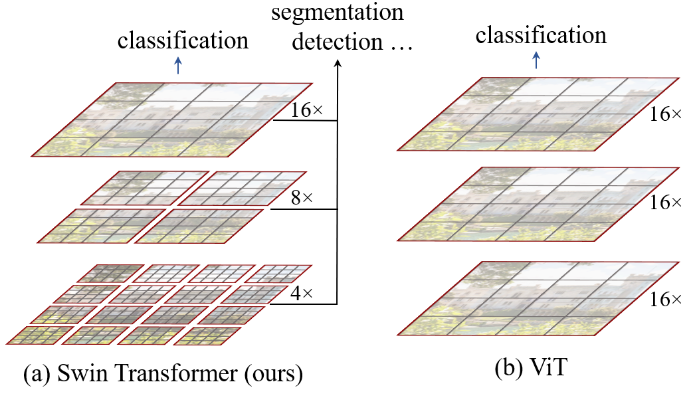
- 图一如上图所示，作者先说了一下 Vision Transformer，把它放在右边做对比
- Vision Transformer就是把图片打成 patch，因为 ViT 里用的 patch size 是16*16的，所以说这里的16 ×，也就意味着是16倍的下采样率，这也就意味着每一个 patch，也就是每一个 token，自始至终代表的尺寸都是差不多的；每一层的Transformer block 看到token的尺寸都是16倍下采样率。虽然它可以通过这种全局的自注意力操作，达到全局的建模能力，但是它对多尺寸特征的把握就会弱一些
- 对于视觉任务，尤其是下游任务比如说检测和分割来说，多尺寸的特征是至关重要的，比如说对目标检测而言，运用最广的一个方法就是 FPN（a feature pyramid network：当有一个分层式的卷积神经网络之后，每一个卷积层出来的特征的 receptive field （感受野）是不一样的，能抓住物体不同尺寸的特征，从而能够很好的处理物体不同尺寸的问题；
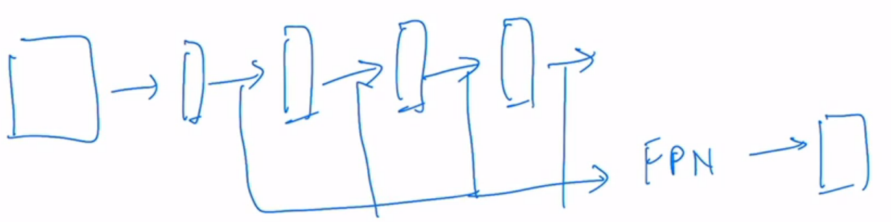
- 对于物体分割任务来说，那最常见的一个网络就是 UNet，UNet 里为了处理物体不同尺寸的问题，提出来一个叫做 skip connection 的方法，当一系列下采样做完以后，去做上采样的时候，不光是从 bottleneck 里去拿特征，还从之前也就是每次下采样完之后的东西里去拿特征，这样就把那些高频率的图像细节又全都能恢复出来了，当然分割里大家常用的网络结构还有 PspNet 、DeepLab，这些工作里也有相应的处理多尺寸的方法，比如说使用空洞卷积、使用 psp 和 aspp 层
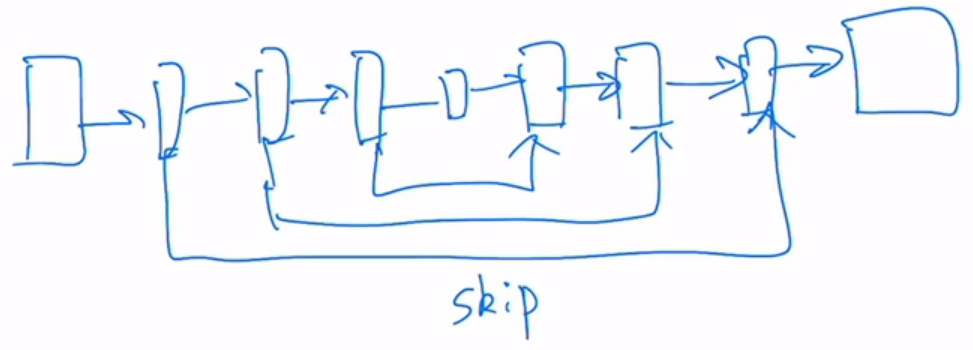
- 总之，对于计算机视觉的下游任务，尤其是密集预测型的任务（检测、分割），有多尺寸的特征是至关重要的
但是在** ViT 里处理的特征都是单一尺寸**，而且是 low resolution，也就是说自始至终都是处理的16倍下采样率过后的特征，所以说，它可能就不适合处理这种密集预测型的任务，同时对 ViT 而言，自注意力始终都是在最大的窗口上进行，也就是说始终都是在整图上进行的，所以它是一个全局建模，它的复杂度是跟随图像的尺寸进行平方倍的增长，像检测和分割领域，一般现在常用的输入尺寸都是800乘以800或者1000乘1000，之前虽然用 patch size 16能处理 224*224 的图片，但是当图片变到这么大的时候，即使用patch size16，序列长度还是会上千，计算复杂度还是难以承受的
所以基于这些挑战，作者提出了 Swin Transformer，Swin Transformer 其实是借鉴了很多卷积神经网络的设计理念以及先验知识
- 比如说为了减少序列的长度、降低计算复杂度，Swin Transformer采取了在小窗口之内算自注意力，而不是像 ViT 一样在整图上算自注意力，这样只要窗口大小是固定的，自注意力的计算复杂度就是固定的，整张图的计算复杂度就会跟图片的大小而成的线性增长关系，就是说图片增大了 x 倍，窗口数量也增大了 x 倍，计算复杂度也就乘以 x，而不是乘以 x 的平方
- 这个就算是利用了卷积神经网络里的 Locality 的 Inductive bias，就是利用了局部性的先验知识，同一个物体的不同部位或者语义相近的不同物体还是大概率会出现在相连的地方，所以即使是在一个 Local，一个小范围的窗口算自注意力也是差不多够用的，全局计算自注意力对于视觉任务来说，其实是有点浪费资源的
- 另外一个挑战是如何生成多尺寸的特征，卷积神经网络为什么会有多尺寸的特征？主要是因为有 Pooling （池化）这个操作，池化能够增大每一个卷积核能看到的感受野，从而使得每次池化过后的特征抓住物体的不同尺寸，所以类似的 ，Swin Transformer也提出来了一个类似于池化的操作叫做 patch merging，就是把相邻的小 patch 合成一个大 patch，这样合并出来的这一个大patch其实就能看到之前四个小patch看到的内容，它的感受野就增大了，同时也能抓住多尺寸的特征
所以图一左边所示，Swin Transformer 刚开始的下采样率是4倍，然后变成了8倍、16倍，之所以刚开始是4×的，是因为最开始的 patch 是4乘4大小的，一旦有了多尺寸的特征信息，有了这种4x、8x、16x的特征图，那自然就可以把这些多尺寸的特征图输给一个 FPN，从而就可以去做检测了
- 同样的道理，有了这些多尺寸的特征图以后，也可以把它扔给一个 UNET，然后就可以去做分割了
- 所以这就是作者在这篇论文里反复强调的，Swin Transformer是能够当做一个通用的骨干网络的，不光是能做图像分类，还能做密集预测性的任务
2.2移动窗口操作
第四段主要就开始讲 Swin Transformer一个关键的设计因素——移动窗口的操作，如下图中所示
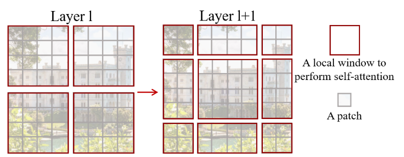
- 如果在 Transformer 第 L 层把输入或者特征图分成小窗口的话，就会有效的降低序列长度，从而减少计算复杂度
- 图中每一个灰色的小 patch 是最基本的元素单元，也就是图一中4*4的 patch；每个红色的框是一个中型的计算单元，也就是一个窗口
- 在 Swin Transformer 这篇论文里，一个小窗口里面默认有七七四十九个小patch的
（1）shift 的操作
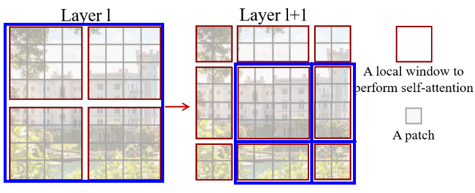
- 如果用一个大的蓝色的正方形来描述整体的特征图，其实** shift 操作就是往右下角的方向整体移了两个 patch，也就变成了像图中右图的格式**
- 然后在新的特征图里把它再次分成四方格，如图中右图所示
- 最后 shift 完就能得到图中Layer 1+1的结果了
（2）效果
这样的好处是窗口与窗口之间可以进行互动，因为如果按照原来的方式，就是没有 shift，这些窗口之间都是不重叠的，如果每次自注意力的操作都在小的窗口里头进行了，每个窗口里的 patch 就永远无法注意到别的窗口里的 patch 的信息，这就达不到使用 Transformer 的初衷
- 因为Transformer的初衷就是更好的理解上下文，如果窗口都是不重叠的，那自注意力真的就变成孤立自注意力，就没有全局建模的能力
- 但如果加上 shift 的操作，每个 patch 原来只能跟它所在的窗口里的别的 patch 进行交互，但是 shift 之后，这个 patch就可以跟新的窗口里的别的 patch就进行交互了，而这个新的窗口里所有的 patch 其实来自于上一层别的窗口里的 patch，这也就是作者说的能起到 cross-window connection，就是窗口和窗口之间可以交互了
再配合上之后提出的 patch merging，合并到 Transformer 最后几层的时候，每一个 patch 本身的感受野就已经很大了，就已经能看到大部分图片了，然后再加上移动窗口的操作，它所谓的窗口内的局部注意力其实也就变相的等于是一个全局的自注意力操作了。这样就是既省内存，效果也好。
（3）结果
第五段作者再次展示了一下结果，因为 Swin Transformer 的结果确实非常好，最后一段作者就展望了一下，作者说他们坚信一个 CV 和NLP 之间大一统的框架是能够促进两个领域共同发展的。
- 确实如此，因为人在学习的过程中也是一个多模态的学习过程，但 Swin Transformer还是利用了更多视觉里的先验知识，从而在视觉任务上大杀四方
- 但是在模型大一统上，也就是 unified architecture 上来说，其实 ViT 还是做的更好的，因为它真的可以什么都不改，什么先验信息都不加，就能让Transformer在两个领域都能用的很好，这样模型不仅可以共享参数，而且甚至可以把所有模态的输入直接就拼接起来，当成一个很长的输入，直接扔给Transformer去做，而不用考虑每个模态的特性。
3.结论
这篇论文提出了 Swin Transformer，它是一个层级式的Transformer，而且它的计算复杂度是跟输入图像的大小呈线性增长的
Swin Transformerr 在 COCO 和 ADE20K上的效果都非常的好，远远超越了之前最好的方法，所以作者说基于此，希望 Swin Transformer 能够激发出更多更好的工作，尤其是在多模态方面
因为在Swin Transformer 这篇论文里最关键的一个贡献就是基于 Shifted Window 的自注意力，它对很多视觉的任务，尤其是对下游密集预测型的任务是非常有帮助的，但是如果 Shifted Window 操作不能用到 NLP 领域里，其实在模型大一统上论据就不是那么强了，所以作者说接下来他们的未来工作就是要把 Shifted Windows用到 NLP 里面，而且如果真的能做到这一点，那 Swin Transformer真的就是一个里程碑式的工作了，而且模型大一统的故事也就讲的圆满了
4.相关工作
跟 ViT 的相关工作非常相似，作者先大概讲了一下卷积神经网络，然后又讲了一下自注意力或者 Transformer 是如何用来帮助卷积神经网络的，最后纯 Transformer 用来做视觉里的骨干网络
5.方法
主要分为两大块
- 大概把整体的流程讲了一下，主要就是过了一下前向过程，以及提出的 patch merging 操作是怎么做的
- 基于 Shifted Window 的自注意力，Swin Transformer怎么把它变成一个transformer block 进行计算
模型总览图如下图所示
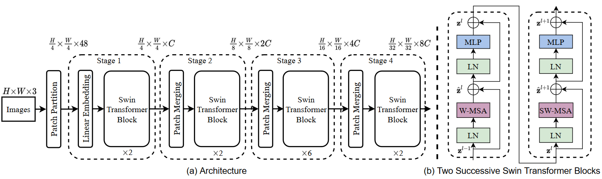
5.1 前向过程
（1）阶段1：Patch Projection + Swin Transformer block
224*224*3 → (patch) 56*56*48 → (STB) 56*56*96
- 假设说有一张$2242243$（ImageNet 标准尺寸）的输入图片
- 第一步就是像 ViT 那样把图片打成 patch，在 Swin Transformer 这篇论文里，它的 patch size 是$44$，而不是像 ViT 一样$1616$，所以说它经过 patch partition 打成 patch 之后，得到图片的尺寸是$565648$，56就是224/4，因为 patch size 是4，向量的维度48，因为$443$，3 是图片的 RGB 通道
- 打完了 patch ，接下来就要做 Linear Embedding，也就是说要把向量的维度变成一个预先设置好的值，就是 Transformer 能够接受的值，在 Swin Transformer 的论文里把这个超参数设为 c，对于 Swin tiny 网络来说，也就是上图中画的网络总览图，它的 c 是96，所以经历完 Linear Embedding 之后，输入的尺寸就变成了$565696$，前面的56*56就会拉直变成3136，变成了序列长度，后面的96就变成了每一个token向量的维度，其实 Patch Partition 和 Linear Embedding 就相当于是 ViT 里的Patch Projection 操作，而在代码里也是用一次卷积操作就完成了，
- 第一部分跟 ViT 其实还是没有区别的，但紧接着区别就来了
- 首先序列长度是3136，对于 ViT 来说，用 patch size $1616$，它的序列长度就只有196，是相对短很多的，这里的3136就太长了，是目前来说Transformer不能接受的序列长度，所以 *Swin Transformer 就引入了基于窗口的自注意力计算，每个窗口按照默认来说，都只有七七四十九个 patch，所以说序列长度就只有49就相当小了，这样就解决了计算复杂度的问题
- 所以也就是说， stage1中的swin transformer block 是基于窗口计算自注意力的，现在暂时先把 transformer block当成是一个黑盒，只关注输入和输出的维度，对于 Transformer 来说，如果不对它做更多约束的话，Transformer输入的序列长度是多少，输出的序列长度也是多少，它的输入输出的尺寸是不变的，所以说在 stage1 中经过两层Swin Transformer block 之后，输出还是$565696$
- 到这其实 Swin Transformer的第一个阶段就走完了，也就是先过一个 Patch Projection 层，然后再过一些 Swin Transformer block，接下来如果想要有多尺寸的特征信息，就要构建一个层级式的 transformer，也就是说需要一个像卷积神经网络里一样，有一个类似于池化的操作
这篇论文里作者就提出 Patch Merging 的操作，Patch Merging 其实在之前一些工作里也有用到，它很像 Pixel Shuffle 的上采样的一个反过程，Pixel Shuffle 是 lower level 任务中很常用的一个上采样方式
（2）阶段2：Patch Merging + Swin Transformer block
操作举例如下图所示
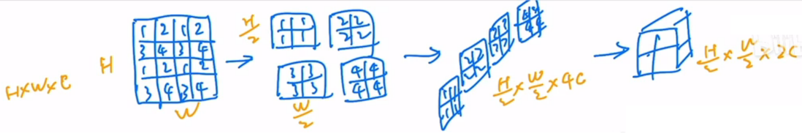
- 假如有一个张量， Patch Merging 顾名思义就是把临近的小 patch 合并成一个大 patch，这样就可以起到下采样一个特征图的效果了
- 这里因为是想下采样两倍，所以说在选点的时候是每隔一个点选一个，也就意味着说对于这个张量来说，每次选的点是1、1、1、1
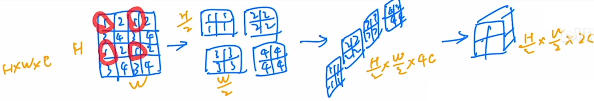
- 其实在这里的1、2、3、4并不是矩阵里有的值，而是给它的一个序号，同样序号位置上的 patch 就会被 merge 到一起，这个序号只是为了帮助理解
- 经过隔一个点采一个样之后，原来的这个张量就变成了四个张量，也就是说所有的1都在一起了，2在一起，3在一起，4在一起，如果原张量的维度是 h * w * c ，当然这里 c 没有画出来，经过这次采样之后就得到了4个张量，每个张量的大小是 h/2、w/2，它的尺寸都缩小了一倍
- 现在把这四个张量在 c 的维度上拼接起来，也就变成了下图中红线所画出来的形式，张量的大小就变成了 h/2 * w/2 * 4c，相当于用空间上的维度换了更多的通道数
- 通过这个操作，就把原来一个大的张量变小了，就像卷积神经网络里的池化操作一样，为了跟卷积神经网络那边保持一致（不论是 VGGNet 还是 ResNet，一般在池化操作降维之后，通道数都会翻倍，从128变成256，从256再变成512），所以这里也只想让他翻倍，而不是变成4倍，所以紧接着又再做了一次操作，就是在 c 的维度上用一个1乘1的卷积，把通道数降下来变成2c，通过这个操作就能把原来一个大小为 $ hwc $的张量变成$ h/2 w/2 2c $的一个张量，也就是说空间大小减半，但是通道数乘2，这样就跟卷积神经网络完全对等起来了
整个这个过程就是 Patch Merging，经历过这次Patch Merging操作之后，输出的大小就从$565696$变成了$2828192$，经过stage2中的 Transformer block，尺寸是不变的，所以出来之后还是28*28*192
这样第二阶段也就完成了，
（3）阶段3，4：重复Patch Merging + Swin Transformer block
第三和第四阶段都是同理，都是先进来做一次Patch Merging，然后再通过一些 Swin Transformer block，所以维度就进一步降成了$1414384$以及$77768$
这里其实会发现，特征图的维度真的跟卷积神经网络好像，因为如果回想残差网络的多尺寸的特征，就是经过每个残差阶段之后的特征图大小也是56*56、28*28、14*14，最后是7*7
而且为了和卷积神经网络保持一致，Swin Transformer这篇论文并没有像 ViT 一样使用 CLS token，ViT 是给刚开始的输入序列又加了一个 CLS token，所以这个长度就从196变成了197，最后拿 CLS token 的特征直接去做分类，但 Swin Transformer 没有用这个 token，它是像卷积神经网络一样，在得到最后的特征图之后用global average polling，就是全局池化的操作，直接把7*7就取平均拉直变成1了
- 作者这个图里并没有画，因为 Swin Transformer的本意并不是只做分类，它还会去做检测和分割，所以说它只画了骨干网络的部分，没有去画最后的分类头或者检测头，但是如果是做分类的话，最后就变成了1*768，然后又变成了1*1,000
- 如果是做ImageNet的话，这样就完成了整个一个分类网络的前向过程
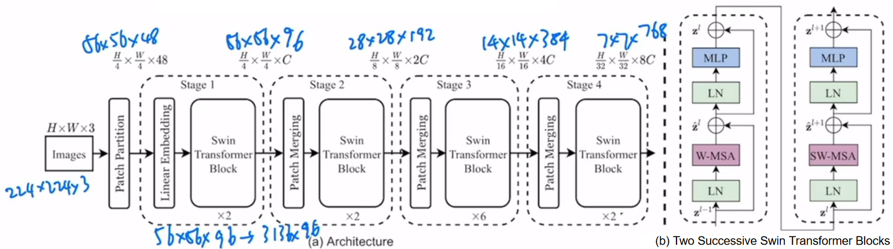
所以看完整个前向过程之后，就会发现 Swin Transformer 有四个 stage，还有类似于池化的 patch merging 操作，自注意力还是在小窗口之内做的以及最后还用的是 global average polling，所以说** Swin Transformer 这篇论文真的是把卷积神经网络和 Transformer 这两系列的工作完美的结合到了一起**，也可以说它是披着Transformer皮的卷积神经网络
5.2 基于自注意力的滑动窗口
这篇论文的主要贡献就是基于窗口或者移动窗口的自注意力，这里作者又写了一段研究动机，就是为什么要引入窗口的自注意力，其实跟之前引言里说的都是一个事情，就是说全局自注意力的计算会导致平方倍的复杂度，同样当去做视觉里的下游任务，尤其是密集预测型的任务，或者说遇到非常大尺寸的图片时候，这种全局算自注意力的计算复杂度就非常贵了，所以就用窗口的方式去做自注意力
（1）窗口划分举例
原图片会被平均的分成一些没有重叠的窗口，拿第一层之前的输入来举例，它的尺寸就是56*56*96，也就说有一个维度是56*56张量，然后把它切成一些不重叠的方格，也就是下图中用橘黄色表示的方格
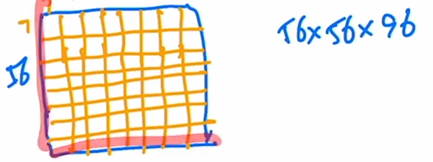
- 每一个橘黄色的方格就是一个窗口，但是这个窗口并不是最小的计算单元，最小的计算单元其实还是之前的那个 patch，也就意味着每一个小窗口里其实还有 m * m 个 patch，在 Swin Transformer 这篇论文里一般 m 默认为7，也就是说，一个橘黄色的小方格里有七七四十九个小 patch
- 现在所有自注意力的计算都是在这些小窗口里完成的，就是说序列长度永远都是七七四十九
- 原来大的整体特征图到底里面会有多少个窗口呢？其实也就是每条边56/7就8个窗口，也就是说一共会有8*8等于64个窗口，就是说会在这64个窗口里分别去算它们的自注意力
（2）基于窗口的自注意力模式的计算复杂度
说到底，基于窗口的自注意力计算方式能比全局的自注意力方式省多少呢？在Swin Transformer这篇论文里作者就给出了一个大概的估计，它给出了两个公式如下所示
- 公式（1）对应的是标准的多头自注意力的计算复杂度
- 每一个图片大概会有 h*w 个 patch，在刚才的例子里，h 和 w 分别都是56，c 是特征的维度
- 公式（2）对应的是基于窗口的自注意力计算的复杂度，这里的 M 就是刚才的7，也就是说一个窗口的某条边上有多少个patch
公式推算
以标准的多头自注意力为例
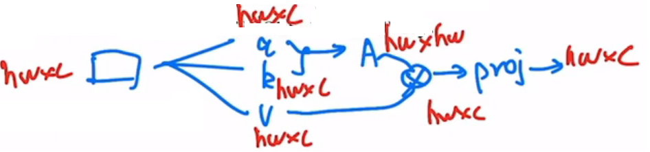
- 如果现在有一个输入，自注意力首先把它变成 q k v 三个向量，这个过程其实就是原来的向量分别乘了三个系数矩阵
- 一旦得到 query 和 k 之后，它们就会相乘，最后得到 attention，也就是自注意力的矩阵
- 有了自注意力之后，就会和 value 做一次乘法，也就相当于是做了一次加权
- 最后因为是多头自注意力，所以最后还会有一个 projection layer，这个投射层会把向量的维度投射到我们想要的维度
如果这些向量都加上它们该有的维度，也就是说刚开始输入是 h*w*c
- 首先，$ to_q_k_v() $函数相当于是用一个 $hwc$ 的向量乘以一个 $cc$ 的系数矩阵，最后得到了 $hwc$。所以每一个计算的复杂度是 $hwc^2$，因为有三次操作，所以是三倍的 $hw*c^2$
- 然后，算自注意力就是 $hwc$乘以 k 的转置，也就是 $chw$，所以得到了 $hwhw$，这个计算复杂度就是$(hw)^2*c$
- 接下来，自注意力矩阵和value的乘积的计算复杂度还是 $(hw)^2c$，所以现在就成了2*$(hw)^2c$
- 最后一步，投射层也就是$hwc$乘以 c*c 变成了 $hwc$ ，它的计算复杂度就又是 $hwc^2$
- 最后合并起来就是最后的公式（1）
基于窗口的自注意力计算复杂度
- 因为在每个窗口里算的还是多头自注意力，所以可以直接套用公式（1），只不过高度和宽度变化了，现在高度和宽度不再是$ h w $，而是变成窗口有多大了，也就是 $MM$，也就是说现在 h 变成了 M，w 也是 M，它的序列长度只有 M * M 这么大
- 所以当把 M 值带入到公式（1）之后，就得到计算复杂度是$4 M^2 c^2 + 2 M^4 c$，这个就是在一个窗口里算多头自注意力所需要的计算复杂度
- 那我们现在一共有 $ h/M * w/M $个窗口，现在用这么多个窗口乘以每个窗口所需要的计算复杂度就能得到公式（2）了
对比公式（1）和公式（2），虽然这两个公式前面这两项是一样的，只有后面从 $(hw)^2$变成了 $M^2 h w$，看起来好像差别不大，但其实如果仔细带入数字进去计算就会发现，计算复杂的差距是相当巨大的，因为这里的 $ hw $如果是56*56的话， $ M^2 $其实只有49，所以是相差了几十甚至上百倍的
5.3 移动窗口
这种基于窗口计算自注意力的方式虽然很好地解决了内存和计算量的问题，但是窗口和窗口之间没有通信，这样就达不到全局建模了，也就文章里说的会限制模型的能力，所以最好还是要有一种方式能让窗口和窗口之间互相通信起来，这样效果应该会更好，因为具有上下文的信息，所以作者就提出移动窗口的方式
移动窗口就是把原来的窗口往右下角移动一半窗口的距离，如果Transformer是上下两层连着做这种操作，先是 window再是 shifted window 的话，就能起到窗口和窗口之间互相通信的目的了
所以说在 Swin Transformer里， transformer block 的安排是有讲究的，每次都是先要做一次基于窗口的多头自注意力，然后再做一次基于移动窗口的多头自注意力，这样就达到了窗口和窗口之间的互相通信。
如下图所示

- 每次输入先进来之后先做一次 Layernorm，然后做窗口的多头自注意力，然后再过 Layernorm 过 MLP，第一个 block 就结束了
- 这个 block 结束以后，紧接着做一次Shifted window，也就是基于移动窗口的多头自注意力，然后再过 MLP 得到输出
- 这两个 block 加起来其实才算是 Swin Transformer 一个基本的计算单元，这也就是为什么stage1、2、3、4中的 swin transformer block 为什么是 2、 2、6、 2，也就是一共有多少层 Swin Transformer block 的数字总是偶数，因为它始终都需要两层 block连在一起作为一个基本单元，所以一定是2的倍数
到此，Swin Transformer整体的故事和结构就已经讲完了，主要的研究动机就是想要有一个层级式的 Transformer，为了这个层级式，所以介绍了 Patch Merging 的操作，从而能像卷积神经网络一样把 Transformer 分成几个阶段，为了减少计算复杂度，争取能做视觉里密集预测的任务，所以又提出了基于窗口和移动窗口的自注意力方式， 也就是连在一起的两个Transformer block，最后把这些部分加在一起，就是 Swin Transformer 的结构
其实作者后面还讲了两个点
- 一个是怎样提高移动窗口的计算效率，他们采取了一种非常巧妙的 masking（掩码）的方式
- 另外一个点就是这篇论文里没有用绝对的位置编码，而是用相对的位置编码
但这两个点其实都是为了提高性能的一些技术细节，跟文章整体的故事已经没有多大关系了
5.4 移动窗口存在的问题
- 上图是一个基础版本的移动窗口，就是把左边的窗口模式变成了右边的窗口方式
- 虽然这种方式已经能够达到窗口和窗口之间的互相通信了，但是会发现一个问题，就是原来计算的时候，特征图上只有四个窗口，但是做完移动窗口操作之后得到了9个窗口，窗口的数量增加了，而且每个窗口里的元素大小不一，比如说中间的窗口还是4*4，有16个 patch，但是别的窗口有的有4个 patch，有的有8个 patch，都不一样了，如果想做快速运算，就是把这些窗口全都压成一个 patch直接去算自注意力，就做不到了，因为窗口的大小不一样
- 有一个简单粗暴的解决方式就是把这些小窗口周围再 pad 上0 ，把它照样pad成和中间窗口一样大的窗口，这样就有9个完全一样大的窗口，这样就还能把它们压成一个batch，就会快很多
- 但是这样的话，无形之中计算复杂度就提升了，因为原来如果算基于窗口的自注意力只用算4个窗口，但是现在需要去算9个窗口，复杂度一下提升了两倍多，所以还是相当可观的
- 那怎么能让第二次移位完的窗口数量还是保持4个，而且每个窗口里的patch数量也还保持一致呢？作者提出了一个非常巧妙的掩码方式。
5.5 掩码masking
（1）掩码过程
当通过普通的移动窗口方式，得到9个窗口之后，现在不在这9个窗口上算自注意力，先再做一次循环移位（ cyclic shift ）
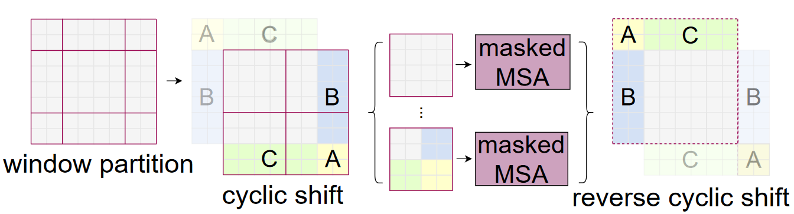
- 经过这次循环移位之后，原来的窗口（虚线）就变成了现在窗口（实线）的样子，那如果在大的特征图上再把它分成四宫格的话，我在就又得到了四个窗口，意思就是说移位之前的窗口数也是4个，移完位之后再做一次循环移位得到窗口数还是4个，这样窗口的数量就固定了，也就说计算复杂度就固定了
- 但是新的问题就来了，虽然对于移位后左上角的窗口（也就是移位前最中间的窗口）来说，里面的元素都是互相紧挨着的，他们之间可以互相两两做自注意力，但是对于剩下几个窗口来说，它们里面的元素是从别的很远的地方搬过来的，所以他们之间，按道理来说是不应该去做自注意力，也就是说他们之间不应该有什么太大的联系
- 解决这个问题就需要一个很常规的操作，也就是掩码操作，这在Transformer过去的工作里是层出不穷，很多工作里都有各式各样的掩码操作
- 在 Swin Transformer这篇论文里，作者也巧妙的设计了几种掩码的方式，从而能让一个窗口之中不同的区域之间也能用一次前向过程，就能把自注意力算出来，但是互相之间都不干扰，也就是后面的 masked Multi-head Self Attention（
MSA） - 算完了多头自注意力之后，还有最后一步就是需要把循环位移再还原回去，也就是说需要把A、B、C再还原到原来的位置上去，原因是还需要保持原来图片的相对位置大概是不变的，整体图片的语义信息也是不变的，如果不把循环位移还原的话，那相当于在做Transformer的操作之中，一直在把图片往右下角移，不停的往右下角移，这样图片的语义信息很有可能就被破坏掉了
所以说整体而言，上图介绍了一种高效的、批次的计算方式，比如说本来移动窗口之后得到了9个窗口，而且窗口之间的patch数量每个都不一样，为了达到高效性，为了能够进行批次处理，先进行一次循环位移，把9个窗口变成4个窗口，然后用巧妙的掩码方式让每个窗口之间能够合理地计算自注意力，最后再把算好的自注意力还原，就完成了基于移动窗口的自注意力计算
（2）掩码操作举例
下图为已经经过循环位移的图片，可以分成4个窗口；假设特征图大小为14*14 个patch，划分成4个窗口，每个窗口里面应该有7*7个patch。图中0~8并不是真正的内容，而是用的一种序号，主要用于区分不用区域。
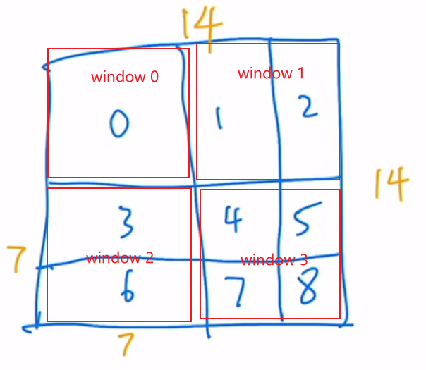
- window 0：只有区域0，是相邻，可以做自注意力计算
- window 1：区域1和2不相邻，不应该做自注意力计算
- window 2：区域3和6不相邻，不应该做自注意力计算
- window 3：区域4，5，7，8都不相邻，不能互相做自注意力计算
以window 2为例，计算自注意力，即掩码如何加
将window 2拉直为一个向量，从左往右，再往下。先得到的的元素为3号位元素，下面为6号。4*7=28个3号元素；3*7=21个6号元素，向量长度位49，维度位c。
转置之后做矩阵乘法，结果简单用33表示。
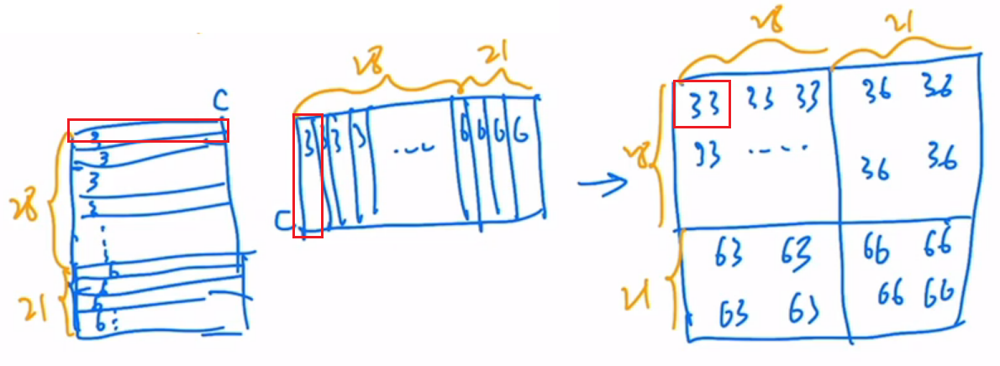
得到矩阵的右上角和左下角的自注意力是我们不需要的，设计一个掩码模板，如下图绿色所示，不需要的区域，掩码为很小的数（负数），将mask和计算后的矩阵相加，再经过softmax操作后，不需要的地方为0了。
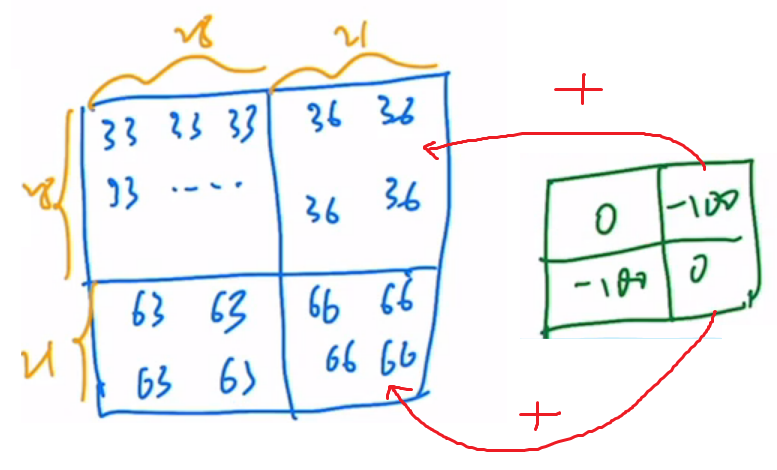
window 1掩码计算示例
计算结果中，11和22是需要的值，但是12和21是不需要的自注意力值。
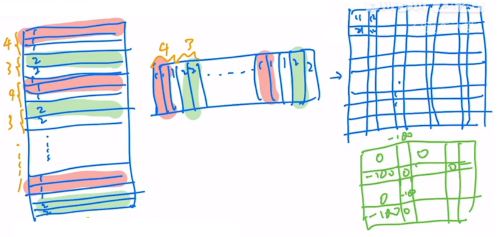
（3）掩码可视化
作者通过这种巧妙的循环位移的方式和巧妙设计的掩码模板，从而实现了只需要一次前向过程，就能把所有需要的自注意力值都算出来，而且只需要计算4个窗口，也就是说窗口的数量没有增加，计算复杂度也没有增加，非常高效的完成了这个任务

5.6 相对位置偏执（论文中没有）
关于相对位置偏执，论文里也没有细讲，就说了参考的哪些论文，然后说使用了相对位置偏执后给够带来明显的提升。根据论文中的表4可以看出，在Imagenet数据集上如果不使用任何位置偏执，top-1为80.1，但使用了相对位置偏执（rel. pos.）后top-1为83.3，提升还是很明显的。
根据论文中的公式，相对位置偏执是在Q和K匹配之后加上的B
如下图，假设输入的feature map高宽都为2，那么首先可以构建出每个像素的绝对位置（左下方的矩阵），对于每个像素的绝对位置是使用行号和列号表示的。比如蓝色的像素对应的是第0行第0列所以绝对位置索引是 $(0,0)$，接下来再看看相对位置索引。首先看下蓝色的像素，在蓝色像素使用q与所有像素k进行匹配过程中，是以蓝色像素为参考点。然后用蓝色像素的绝对位置索引与其他位置索引进行相减，就得到其他位置相对蓝色像素的相对位置索引。例如黄色像素的绝对位置索引是$ (0,1) $，则它相对蓝色像素的相对位置索引为$ (0, 0) - (0, 1)=(0, -1) $。那么同理可以得到其他位置相对蓝色像素的相对位置索引矩阵。同样，也能得到相对黄色，红色以及绿色像素的相对位置索引矩阵。接下来将每个相对位置索引矩阵按行展平，并拼接在一起可以得到下面的4x4矩阵 。
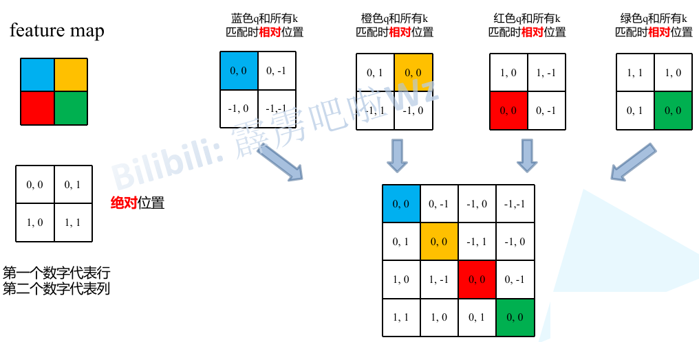
请注意，这里描述的一直是相对位置索引，并不是相对位置偏执参数。因为后面会根据相对位置索引去取对应的参数。比如说黄色像素是在蓝色像素的右边，所以相对蓝色像素的相对位置索引为$(0, -1)$。绿色像素是在红色像素的右边，所以相对红色像素的相对位置索引为$ (0, -1) $。可以发现这两者的相对位置索引都是$(0, -1)$，所以他们使用的相对位置偏执参数都是一样的。其实讲到这基本已经讲完了，但在源码中作者为了方便把二维索引给转成了一维索引。具体这么转的呢，有人肯定想到，简单啊直接把行、列索引相加不就变一维了吗？比如上面的相对位置索引中有(0, -1)和(-1,0)在二维的相对位置索引中明显是代表不同的位置，但如果简单相加都等于-1那不就出问题了吗？接下来我们看看源码中是怎么做的。首先在原始的相对位置索引上加上M-1(M为窗口的大小，在本示例中M=2)，加上之后索引中就不会有负数了。
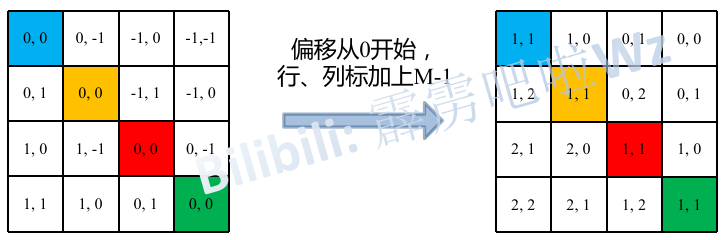
接着将所有的行标都乘上2M-1。
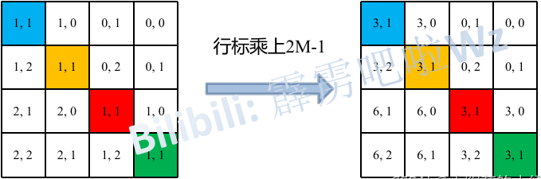
最后将行标和列标进行相加。这样即保证了相对位置关系，而且不会出现上述 $0+(-1)=(-1)+0$的问题了，是不是很神奇。
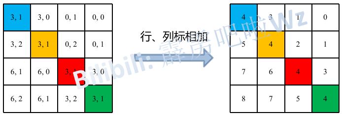
刚刚上面也说了，之前计算的是相对位置索引，并不是相对位置偏执参数。真正使用到的可训练参数$ \hat{B} $是保存在relative position bias table表里的，这个表的长度是等于$ (2M-1) \times (2M-1) $的。那么上述公式中的相对位置偏执参数B是根据上面的相对位置索引表根据查relative position bias table表得到的，如下图所示。
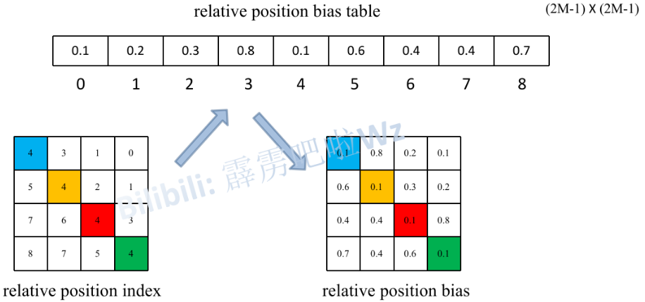
5.7 Swin Transformer的变体
在方法的最后一节也就是3.3节，作者大概介绍了一下他们提出的 Swin Transformer的几个变体
下图（表7）是原论文中给出的关于不同Swin Transformer的配置，T(Tiny)，S(Small)，B(Base)，L(Large)，其中：
win. sz. 7x7表示使用的窗口（Windows）的大小dim表示feature map的channel深度（或者说token的向量长度）head表示多头注意力模块中head的个数
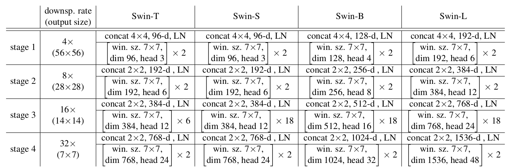
- Swin Tiny：C=96, layer numbers = {2,2,6,2}
- Swin Small： C= 96, layer numbers ={2,2,18,2}
- Swin Base：C= 128, layer numbers ={2,2,18,2}
- Swin Large： C= 192, layer numbers ={2,2,18,2}
Swin Tiny的计算复杂度跟 ResNet-50 差不多，Swin Small 的复杂度跟 ResNet-101 是差不多的，这样主要是想去做一个比较公平的对比
这些变体之间有哪些不一样呢？，其实主要不一样的就是两个超参数
- 一个是向量维度的大小 c
- 另一个是每个 stage 里到底有多少个 transform block
这里其实就跟残差网络就非常像了，残差网络也是分成了四个 stage，每个 stage 有不同数量的残差块。
6.实验
6.1 分类实验
首先是分类上的实验，这里一共说了两种预训练的方式
- 第一种就是在正规的ImageNet-1K(128万张图片、1000个类)上做预训练
- 第二种方式是在更大的ImageNet-22K（1,400万张图片、2万多个类别）上做预训练
当然不论是用ImageNet-1K去做预训练，还是用ImageNet-22K去做预训练，最后测试的结果都是在ImageNet-1K的测试集上去做的，结果如下表所示

- 上半部分是ImageNet-1K预训练的模型结果
- 下半部分是先用ImageNet-22K去预训练，然后又在ImageNet-1K上做微调，最后得到的结果
- 在表格的上半部分，作者先是跟之前最好的卷积神经网络做了一下对比，RegNet 是之前 facebook 用 NASA 搜出来的模型，EfficientNet 是 google 用NASA 搜出来的模型，这两个都算之前表现非常好的模型了，他们的性能最高会到 84.3
- 接下来作者就写了一下之前的 Vision Transformer 会达到什么效果，对于 ViT 来说，因为它没有用很好的数据增强，而且缺少偏置归纳，所以说它的结果是比较差的，只有70多
- 换上 DeiT 之后，因为用了更好的数据增强和模型蒸馏，所以说 DeiT Base 模型也能取得相当不错的结果，能到83.1
- 当然 Swin Transformer 能更高一些，Swin Base 最高能到84.5，稍微比之前最好的卷积神经网络高那么一点点，就比84.3高了0.2
- 虽然之前表现最好的 EfficientNet 的模型是在 600*600 的图片上做的，而 Swin Base 是在 384* 384 的图片上做的，所以说 EfficientNet 有一些优势，但是从模型的参数和计算的 FLOPs 上来说 EfficientNet 只有66M，而且只用了 37G 的 FLOPs，但是 Swin Transformer 用了 88M 的模型参数，而且用了 47G 的 FLOPs，所以总体而言是伯仲之间
- 表格的下半部分是用 ImageNet-22k 去做预训练，然后再在ImageNet-1k上微调最后得到的结果
- 这里可以看到，一旦使用了更大规模的数据集，原始标准的 ViT 的性能也就已经上来了，对于 ViT large 来说它已经能得到 85.2 的准确度了，已经相当高了
- 但是 Swin Large 更高，Swin Large 最后能到87.3，这个是在不使用JFT-300M，就是特别大规模数据集上得到的结果，所以还是相当高的
6.2 目标检测实验
接下来是目标检测的结果，作者是在 COCO 数据集上训练并且进行测试的，结果如下图所示

- 表2（a）中测试了在不同的算法框架下，Swin Transformer 到底比卷积神经网络要好多少，主要是想证明 Swin Transformer 是可以当做一个通用的骨干网络来使用的，所以用了 Mask R-CNN、ATSS、RepPointsV2 和SparseR-CNN，这些都是表现非常好的一些算法，在这些算法里，过去的骨干网络选用的都是 ResNet-50，现在替换成了 Swin Tiny
- Swin Tiny 的参数量和 FLOPs 跟 ResNet-50 是比较一致的，从后面的对比里也可以看出来，所以他们之间的比较是相对比较公平的
- 可以看到，Swin Tiny 对 ResNet-50 是全方位的碾压，在四个算法上都超过了它，而且超过的幅度也是比较大的
- 接下来作者又换了一个方式做测试，现在是选定一个算法，选定了Cascade Mask R-CNN 这个算法，然后换更多的不同的骨干网络，比如 DeiT-S、ResNet-50 和 ResNet-101，也分了几组，结果如上图中表2（b）所示
- 可以看出，在相似的模型参数和相似的 Flops 之下，Swin Transformer 都是比之前的骨干网络要表现好的
- 接下来作者又做了第三种测试的方式，如上图中的表2（c）所示，就是系统层面的比较，这个层面的比较就比较狂野了，就是现在追求的不是公平比较，什么方法都可以上，可以使用更多的数据，可以使用更多的数据增强，甚至可以在测试的使用 test time augmentation（TTA）的方式
- 可以看到，之前最好的方法 Copy-paste 在 COCO Validation Set上的结果是55.9，在 Test Set 上的结果是56，而这里如果跟最大的 Swin Transformer—Swin Large 比，它的结果分别能达到58和58.7，这都比之前高了两到三个点
6.3 语义分割实验
第三个实验作者选择了语义分割里的ADE20K数据集，结果如下图所示

- 上图表3里可以看到之前的方法，一直到 DeepLab V3、ResNet 其实都用的是卷积神经网络，之前的这些方法其实都在44、45左右徘徊
- 但是紧接着 Vision Transformer 就来了，那首先就是 SETR 这篇论文，他们用了 ViT Large，所以就取得了50.3的这个结果
- Swin Transformer Large也取得了53.5的结果，就刷的更高了
- 其实作者这里也有标注，就是有两个“+”号的，意思是说这些模型是在ImageNet-22K 数据集上做预训练，所以结果才这么好
6.4 消融实验
实验结果如下图所示，主要就是想说一下移动窗口以及相对位置编码到底对 Swin Transformer 有多有用

- 可以看到，如果光分类任务的话，其实不论是移动窗口，还是相对位置编码，它的提升相对于基线来说，也没有特别明显，当然在ImageNet的这个数据集上提升一个点也算是很显著了
- 但是他们更大的帮助，主要是出现在下游任务里，就是 COCO 和 ADE20K 这两个数据集上，也就是目标检测和语义分割这两个任务上
- 可以看到，用了移动窗口和相对位置编码以后，都会比之前大概高了3个点左右，提升是非常显著的，这也是合理的，因为如果现在去做这种密集型预测任务的话，就需要特征对位置信息更敏感，而且更需要周围的上下文关系，所以说通过移动窗口提供的窗口和窗口之间的互相通信，以及在每个 Transformer block都做更准确的相对位置编码，肯定是会对这类型的下游任务大有帮助的
7.点评
除了作者团队自己在过去半年中刷了那么多的任务，比如说最开始讲的自监督的Swin Transformer，还有 Video Swin Transformer 以及Swin MLP，同时 Swin Transformer 还被别的研究者用到了不同的领域。
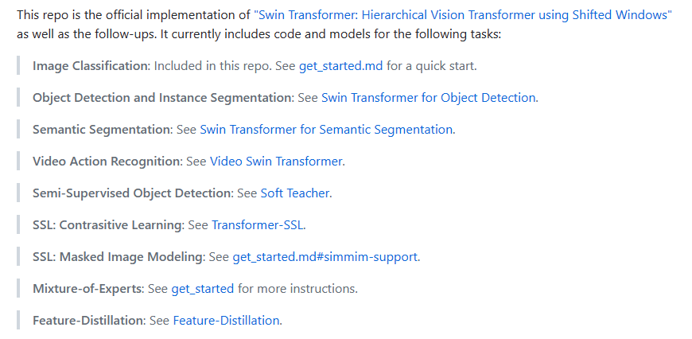
所以说，Swin Transformer 真的是太火，真的是在视觉领域大杀四方，感觉以后每个任务都逃不了跟 Swin 比一比，而且因为 Swin 这么火，所以说其实很多开源包里都有 Swin 的实现
- 百度的 PaddlePaddle
- 视觉里现在比较火的 pytorch-image-models，就是 Timm 这个代码库里面也是有 Swin 的实现的
- 同时 Hugging Face 估计也是有的
虽然前面已经说了很多 Swin Transformer 的影响力啊已经这么巨大了，但其实他的影响力远远不止于此，论文里这种对卷积神经网络，对 Transformer，还有对 MLP 这几种架构深入的理解和分析是可以给更多的研究者带来思考的，从而不仅可以在视觉领域里激发出更好的工作，而且在多模态领域里，相信它也能激发出更多更好的工作。